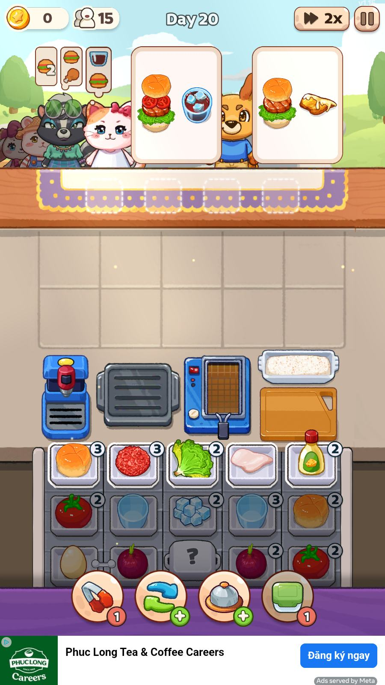
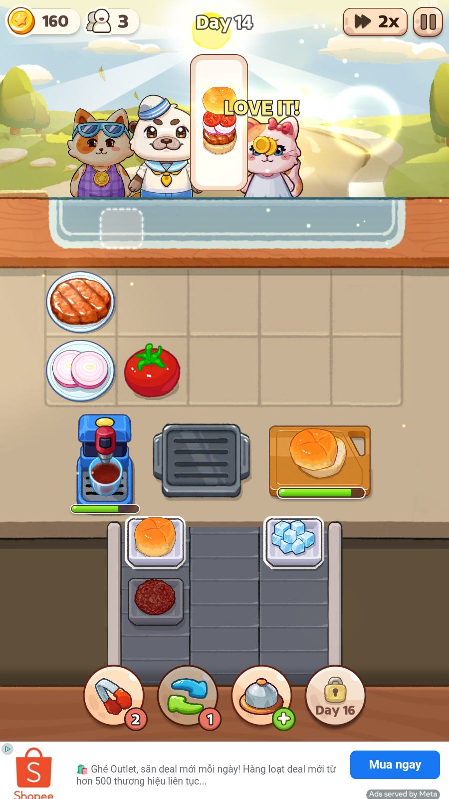
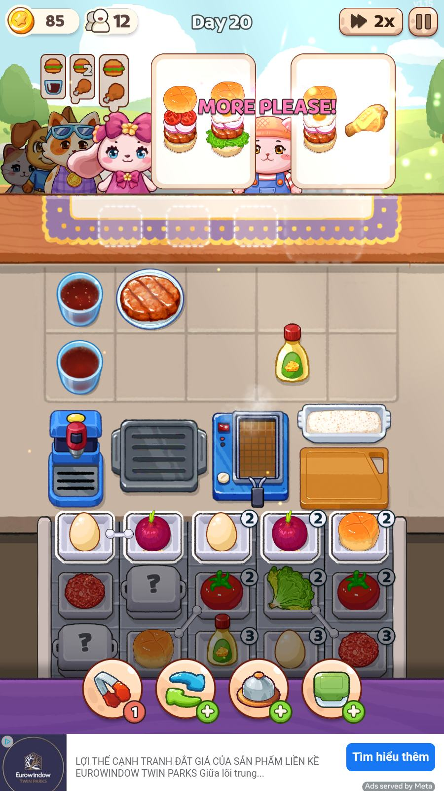
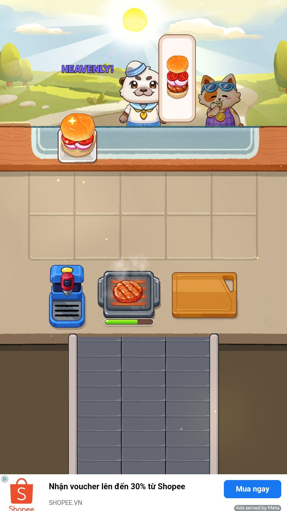
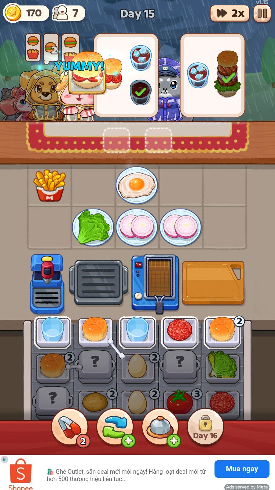
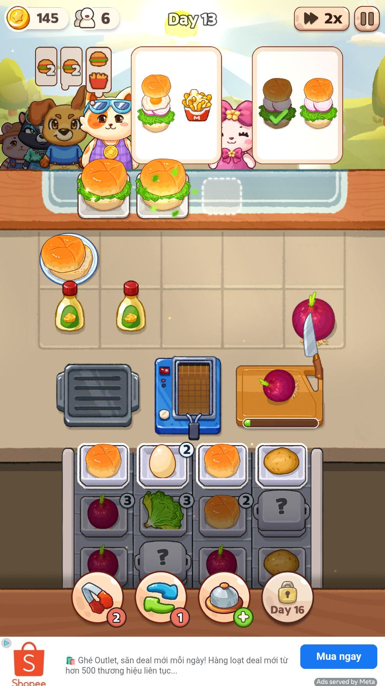
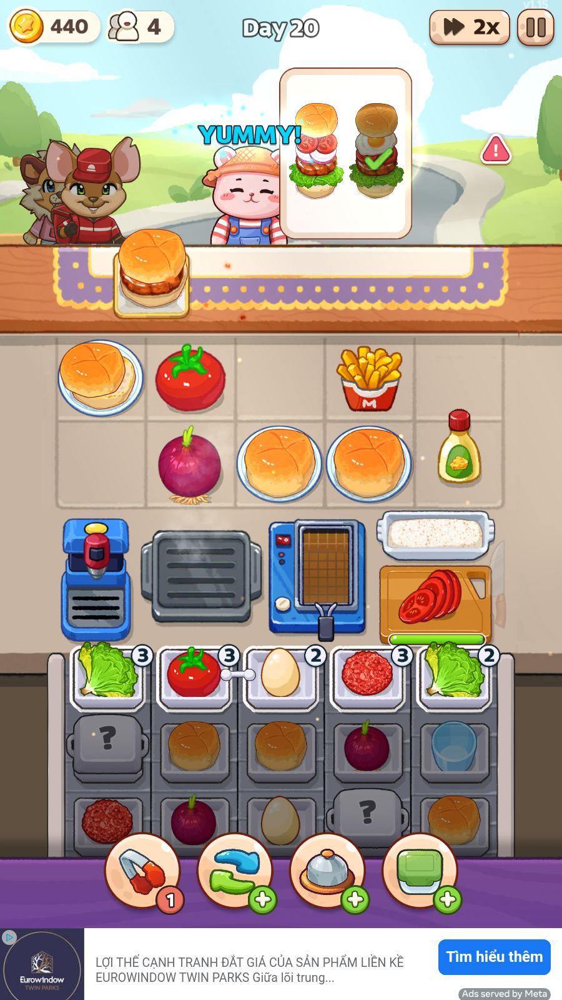

Khách và phiếu gọi món
Mô tả
- Khách là "đơn hàng biết đi": mỗi khách mang 1 đến 5 món, vào theo thứ tự cố định trong dữ liệu level.
- Cùng lúc có 2 khách gọi món (thẻ đơn lớn) và 3 khách chờ (thẻ nhỏ xem trước), nên người chơi luôn thấy trước 5 khách tiếp theo.
- Phần lớn khách không có đồng hồ (13.118 trong 13.402). 284 khách có giờ (60 đến 180 giây), đa số là boss và shipper; họ là nguồn thua "Out of Patience".
- Coin trả theo giá đơn × phần trăm theo cảm xúc (Happy 100%, Normal và Angry 50%, Leave 0%).
- Boss và shipper là khách đặc biệt với hướng dẫn riêng; boss chỉ vào khi không còn khách nào đang gọi món.
Thiết kế chi tiết
Tóm tắt thiết kế
- APK 2 khách gọi + 3 khách chờ ở cả 11 scene FS: người chơi luôn lập kế hoạch cho 5 khách phía trước.
- Code Chỉ 2,1% khách có đồng hồ (284/13.402); đồng hồ gắn chặt với khách đặc biệt (boss 162/351, shipper 55/60). Đa số màn không có áp lực thời gian, áp lực nằm ở chỗ chứa.
- Code Coin tính theo cảm xúc: Happy 100%, Normal và Angry 50%, Leave 0%; số xu bay 5 / 3 / 2 / 0 (scene
RestaurantParams). - Code Boss khoá hàng: boss chỉ vào khi khu gọi món trống và chặn khách khác vào cho tới khi gọi xong (
TryAdmitBoss). - Playtest Mỗi khách 25 đến 55 coin ở Day 13; Day 15 (Super Hard) 12 khách, tổng +515 coin.
- Nhận định Hệ số giờ ×3 trong RC không khớp số đo ×1 của 1.11, nên mô hình "đồng hồ khách" nên được xem là chưa chốt khi sao chép.
Luồng người chơi từng bước
- Khách chờHệ thống PlaytestBa thẻ chờ phía trái, càng xa càng tối và nhỏ.

Day 20: 2 thẻ đơn lớn (burger + cola, burger + gà sốt) và 3 thẻ chờ phía trái - Khách gọi mónHệ thống Code
RevealOrderhiện thẻ đơn; đồng hồ chạy nếu khách có giờ. - Giao mónHệ thống PlaytestMón khớp đơn tự bay tới; tick xanh hiện trên thẻ.Không có đơn sai.
- Phản ứng và coinHệ thống PlaytestChữ phản ứng, tim, xu bay; coin tăng.

Chữ phản ứng "LOVE IT!" khi giao xong món 
"MORE PLEASE!" cùng đồng xu và tim bay từ khách - Boss hoặc shipperHệ thống CodeBoss chờ khu trống rồi gọi sau 1 giây; shipper là khách nhiều món có giờ.
- Hết giờHệ thống CodePopup Save-Me nạp lại giờ; từ chối thì khách đi.Bản 1.11 đo: từ chối là thua màn.


Loại khách trong dữ liệu level
| Loại | Số lượt | Có đồng hồ | Ví dụ nhân vật |
|---|---|---|---|
| Khách thường không tên | 12.067 | 28 | gán ngẫu nhiên bằng CustomerRandomizer.Assign |
| Khách có tên (Normal) | 913 | 28 (tính trong nhóm có tên) | fox_lady, koala_seifuku, lion_boy, goat_emo |
| Shipper | 60 | 55 | rat_shipper, bird_shipper |
| Boss | 351 | 162 | pig_boss, rooster_mayor, turtle_tycoon, flamingo_diva, octopus_inspector, boar_boss |
| Other | 11 | 11 | - |
Số thô từ Data/levels. Hàng thứ nhất tính theo hiệu 13.402 trừ các nhóm có tên (913 + 60 + 351 + 11 = 1.335). Số khách có giờ tổng 284 = 28 (không tên) + 256 (có tên).
Giá trị waitTime trong dữ liệu
| waitTime (giây) | Số khách |
|---|---|
| 60 | 58 |
| 70 | 1 |
| 80 | 14 |
| 90 | 67 |
| 120 | 137 |
| 150 | 6 |
| 180 | 1 |
Giờ thật = waitTime × hệ số; hệ số hiệu lực chưa chốt.
Cảm xúc và coin
| Cảm xúc | Phần trăm giá | Số xu bay | Ngưỡng thời gian đã trôi |
|---|---|---|---|
| Happy | 100 | 5 | dưới 10 phần trăm |
| Normal | 50 | 3 | 10 đến 50 phần trăm |
| Angry | 50 | 2 | 50 đến 100 phần trăm |
| Leave | 0 | 0 | hết giờ |
Ngưỡng map từ FTimer.timePercentToEmotion [0, 10, 50, 100]; thứ tự gán theo bảng EmotionByStage chưa đọc được nên cột ngưỡng là suy luận (Nhận định).
Vận dụng cho game khác
- Hàng chờ nhìn thấy trước (3 thẻ) cho người chơi lập kế hoạch mà không cần hiện toàn bộ đơn.
- Chỉ gắn đồng hồ vào khách đặc biệt để áp lực thời gian là "gia vị", còn khung chính vẫn là bài toán chỗ chứa.
- Thưởng theo cảm xúc (kiên nhẫn còn lại) khuyến khích phục vụ khách có giờ trước mà không cần hệ thống điểm riêng.
Bảng tổng hợp mọi tính năng đã làm chi tiết: FoodiePop_ThietKeChiTiet.xlsx.
Mở khóa & điểm vào
Có từ Day 1. Khách có tên (shipper, boss) bắt đầu từ Day 5 ở burger (customer.Character ở Data/levels/_stats.json); khách có đồng hồ cũng từ Day 5; khách mặc đồ thời tiết từ Day 10.
Điểm vào:
- Hai thẻ đơn lớn ở giữa màn và ba thẻ chờ phía trái
- Chạm thẻ đơn để đổi kiểu hiển thị (tầng burger hoặc danh sách nguyên liệu)
- Banner "BOSS APPEARS!" và tutorial boss / shipper (
TutorialSequence-boss,TutorialSequence-shipper)
Cách hoạt động
- Level cung cấp chuỗi khách (
CustomerSpawnData: waitTime, thời tiết, danh sách món, nhân vật).CustomerRandomizer.Assigngán nhân vật cho khách chưa có id,SeasonalBossSwap.Applyđổi sang skin mùa. CustomerSpawner.Beginbắt đầu;FillWaitingđổ khách vào hàng chờ tối đa 3 (mỗi 0,5 giây).CanAdmit/TryAdmitFrontcho khách lên khu gọi món khi còn trong 2 chỗ (ổn định 0,25 giây trước khi vào).CustomerLineController.RevealOrderhiện thẻ đơn; nếu khách có giờ thì đồng hồFTimerchạy với thời gian = waitTime × hệ số.- Món khớp đơn được giao tự động (
SubmitFood,HandleCorrect); không có đơn sai. - Khi đủ món: khách ăn,
HandleLeavetính coin theo cảm xúc (OrderPricingService.SpawnCoin), khách rời,PromoteWaitingQueueđẩy khách tiếp theo lên. - Hết giờ:
OnTimeoutrồiAskSaveMe; nhận Save-Me thìRefillWaitTime, từ chối thì khách đi. - Khách cuối rời thì màn thắng (LevelFlow).
Ảnh chụp
Bấm ảnh để phóng to, dùng phím ← → để chuyển ảnh. Nhãn màu cho biết nguồn bằng chứng của ảnh.









Phần thưởng
| Ngữ cảnh | Phần thưởng | Evidence |
|---|---|---|
| Phục vụ một khách | Coin = giá đơn × 0 / 50 / 50 / 100 phần trăm theo cảm xúc Leave / Angry / Normal / Happy | OrderPricingCalculator.CalculatePrice |
| Khách không có đồng hồ | Luôn Happy (100 phần trăm) theo mô tả 1.11; chưa kiểm lại bằng số ở 1.15 | FTimer.GetEmotionByRate |
Số liệu chính
| Chỉ số | Giá trị | Nguồn |
|---|---|---|
| Số khách trong dữ liệu | 13.402 (1.100 file level) | Data/levels |
| Khách có đồng hồ | 284; waitTime 60/70/80/90/120/150/180 s | Data/levels waitTime |
| Khách có tên | Normal 913, Shipper 60, Boss 351, Other 11 | Data/levels character |
| Boss có đồng hồ | 162 / 351 | Data/levels |
| Khách đồng thời | 2 gọi món + 3 chờ | CustomerSpawner (scene) |
| Phần trăm coin theo cảm xúc | 0 / 50 / 50 / 100 | RestaurantParams.emotionToPricePercentage |
| Số xu bay theo cảm xúc | 0 / 2 / 3 / 5 | RestaurantParams.emotionToNumCoins |
Use case (11)
Bấm vào từng use case để mở. Mở/đóng tất cả
UC-01 Khách vào theo thứ tự và lấp hàng chờ
Các bướcCustomerSpawner.FillWaitingtạo thẻ chờ (đợiwaitingSpawnInterval0,5 s)PromoteWaitingQueuedồn hàng, khách sau tối hơn (DarkenFor) và nhỏ hơn (ScaleFor)TryAdmitFrontđưa khách lên khu gọi món sauadmitSettleDelay0,25 s
| Actor | System |
|---|---|
| Trigger | Bắt đầu màn hoặc có chỗ trống |
| Điều kiện | Còn khách trong chuỗi |
| Kết quả | Luôn thấy 3 thẻ chờ phía trái (playtest Day 13 lúc bắt đầu: 3 thẻ "burger ×2") |
| Quy tắc / số liệu | Scene: maxOrderCustomers 2, waitingCount 3, waitingDarkenBase 0,3 (11/11 scene FS) |
| Evidence | CustomerSpawner.TryAdmitFront |
UC-02 Hiện thẻ đơn
Các bướcCustomerLineController.OnArrivedAtOrderSlotrồiRevealOrder- Dựng bảng đơn (
FCustomerLine.ClaimOrderBoards) - Bật đồng hồ nếu khách có giờ
| Actor | System |
|---|---|
| Trigger | Khách tới chỗ gọi món |
| Điều kiện | Có chỗ gọi món trống |
| Kết quả | Thẻ đơn lớn gồm các món; món đã xong hiện bóng mờ và dấu tick xanh |
| Quy tắc / số liệu | Một khách có 1 đến 5 món: 2.135 khách 1 món, 8.588 khách 2 món, 2.515 khách 3 món, 122 khách 4 món, 42 khách 5 món |
| Evidence | CustomerLineController.RevealOrder |
UC-03 Giao món khớp đơn
Các bướcGetMatchingIndicestìm ô đơn khớpPunchMatchingOrdernhấn nhẹ thẻSubmitFood,HandleCorrect,CompleteOrderAtđánh dấu xong
| Actor | System |
|---|---|
| Trigger | Món đủ trên đĩa quầy |
| Điều kiện | Có đơn mở khớp món |
| Kết quả | Tick xanh trên thẻ; khi hết món của khách thì khách ăn và rời |
| Quy tắc / số liệu | Không có đơn sai: HandleIncorrect tồn tại nhưng không gặp khi chơi |
| Evidence | CustomerLineController.SubmitFood |
UC-04 Trả coin theo cảm xúc
Các bướcOrderPricingCalculator.CalculatePricecộng giá các đơn của khách (CalculateBasePrice)- Nhân phần trăm cảm xúc (
emotionToPricePercentage) CalculateNumCoinlấy số đồng xu bay (emotionToNumCoins)MoneyService.SpawnCoinbay xu về HUD
| Actor | System |
|---|---|
| Trigger | Khách rời |
| Điều kiện | CustomerLeaveData có cảm xúc và số món |
| Kết quả | Playtest Day 13: 25 đến 55 coin mỗi khách; tổng +375 ở màn thắng |
| Quy tắc / số liệu | Cảm xúc Leave 0 / Angry 50 / Normal 50 / Happy 100 phần trăm giá; số xu bay 0 / 2 / 3 / 5 |
| Evidence | OrderPricingCalculator.CalculatePrice |
UC-05 Khách có đồng hồ
Các bướcCustomerSpawner.WaitTimeFor= waitTime ×_waitTimeScaleFTimer.StartWaitingchạy vòng tròn; màu theotimePercentToEmotion[0, 10, 50, 100] phần trăm- Khách đổi biểu cảm Happy, Normal, Angry theo thời gian đã trôi (
GetEmotionByRate)
| Actor | System |
|---|---|
| Trigger | Khách có waitTime > 0 hiện thẻ |
| Điều kiện | 284 khách trong dữ liệu (2,1%) |
| Kết quả | Biểu cảm lúc nhận món quyết định phần trăm coin |
| Quy tắc / số liệu | Giá trị waitTime trong dữ liệu: 60 s (58 khách), 70 (1), 80 (14), 90 (67), 120 (137), 150 (6), 180 (1). Hệ số stack_config.waitTimeScale RC = 3 nhưng bản 1.11 đo ×1; chưa đo lại ở 1.15 |
| Evidence | CustomerSpawner.WaitTimeFor |
UC-06 Hết kiên nhẫn
Các bướcFTimer.CheckTimeOutgọiOnTimeoutCustomerLineController.OnTimeoutrồiAskSaveMeLevelSaveMeControl.HandleCustomerOutOfTimehiện popup "Refill customer wait time"
| Actor | System |
|---|---|
| Trigger | FTimer về 0 |
| Điều kiện | Khách có giờ |
| Kết quả | Nhận: ReviveFromSaveMe nạp lại giờ. Từ chối: khách bỏ đi |
| Quy tắc / số liệu | Bản 1.11: từ chối thì thua màn và mất 1 tim. Chưa quay lại ở 1.15 |
| Evidence | CustomerLineController.OnTimeout |
UC-07 Boss xuất hiện
Các bướcCustomerSpawner.TryAdmitBosschờ khu gọi món trống; trong lúc đó không ai khác được vào (IsBossTurn,HasOrderingBoss)- Banner "BOSS APPEARS!" và
FCustomerLineHandle.SetBossAlertnháy cảnh báo - Sau
bossOrderDelay1 s boss mới gọi món
| Actor | System |
|---|---|
| Trigger | Tới lượt khách là Boss (CharacterType.Boss) |
| Điều kiện | Không còn khách nào đang gọi món |
| Kết quả | Boss gọi đơn lớn và hầu hết có đồng hồ: 162 trong 351 lượt boss có giờ |
| Quy tắc / số liệu | 351 lượt boss trong dữ liệu (pig_boss 52, rooster_mayor 21, turtle_tycoon 20, flamingo_diva 20, octopus_inspector 20, boar_boss 20, ...). Tutorial: "The boss is demanding and loses patience easily" |
| Evidence | CustomerSpawner.TryAdmitBoss |
UC-08 Shipper nhiều đơn
Các bước- Shipper vào như khách thường nhưng có đồng hồ và 2 đến 3 món
- Chạy tutorial shipper lần đầu
| Actor | System |
|---|---|
| Trigger | Khách CharacterType.Shipper vào |
| Điều kiện | Từ Day 5 (burger) |
| Kết quả | Day 5: rat_shipper 60 s, 3 món |
| Quy tắc / số liệu | 60 lượt shipper trong dữ liệu (rat_shipper 37, bird_shipper 23); 55 trong 60 có giờ. Tutorial: "The delivery man picks up multiple orders before time runs out" |
| Evidence | CustomerSpawner.ApplyStaffId |
UC-09 Khách mặc đồ thời tiết
Các bướcCustomerWeatherDisplayđổi skin (áo mưa, đồ mùa đông, ...)- Nền màn đổi theo thời tiết (Rainy, Sunny, Stormy, Freeze)
| Actor | System |
|---|---|
| Trigger | Level có weatherEffect khác 0 |
| Điều kiện | Từ Day 6 (mưa) |
| Kết quả | Day 15 mưa sấm: khách mặc áo mưa |
| Quy tắc / số liệu | Chỉ là skin, không đổi luật (MapWeatherSO, WeatherSkinTriggerSO) |
| Evidence | CustomerWeatherDisplay.ApplyEffect |
UC-10 Nhân viên dọn bàn (không dùng)
Các bướcCustomerLineController.CleanDishesThenLeavedọn hết đĩa bẩn rồi rờiCustomerSpawner.DropAutoStaffIfNothingToCleanbỏ nhân viên nếu không có gì để dọn
| Actor | System |
|---|---|
| Trigger | Khách typeId = 1 (StaffCleanDish) hoặc appendCleanStaffAtEnd |
| Điều kiện | Có đĩa bẩn |
| Kết quả | Không gặp: 13.402 khách trong 1.100 file đều typeId = 0 và không món nào khai đĩa bẩn |
| Quy tắc / số liệu | Scene đặt appendCleanStaffAtEnd 1 nhưng không có đĩa bẩn nào được sinh |
| Evidence | CustomerLineController.CleanDishesThenLeave |
UC-11 Khách đổi hiển thị thẻ đơn
Các bước- Chạm thẻ đổi giữa kiểu tầng burger và danh sách nguyên liệu (
ListIngredientBoardView)
| Actor | Player |
|---|---|
| Trigger | Chạm thẻ đơn |
| Điều kiện | Có tutorial "second" ở burger Day 4 |
| Kết quả | Chỉ đổi hiển thị |
| Quy tắc / số liệu | Day 4 chạy TutorialStepCallCustomer rồi bắt chạm thẻ |
| Evidence | TutorialStepCallCustomer.Run |
Cấu hình (14)
Gộp mọi nguồn: const trong code, giá trị mặc định trong APK, storage key, AB test, cờ server.
| Nguồn | Key | Kiểu | Giá trị | Ý nghĩa | Nơi định nghĩa |
|---|---|---|---|---|---|
| scene FS | CustomerSpawner.maxOrderCustomers | int | 2 | Số khách gọi món cùng lúc | FS<Map>.unity (11/11) |
| scene FS | CustomerSpawner.waitingCount | int | 3 | Số khách chờ hiển thị | FS<Map>.unity |
| scene FS | CustomerSpawner.waitingSpawnInterval / admitSettleDelay / bossOrderDelay | float | 0,5 s / 0,25 s / 1 s | Nhịp vào và gọi món | FS<Map>.unity |
| scene FS | CustomerSpawner.waitingDarkenBase | float | 0,3 | Độ tối khách chờ đầu hàng | FS<Map>.unity |
| scene FS | CustomerSpawner.appendCleanStaffAtEnd | bool | 1 | Thêm nhân viên dọn bàn ở cuối nếu có đĩa bẩn | FS<Map>.unity |
| scene FS | FTimer.timePercentToEmotion | int[] | [0, 10, 50, 100] | Ngưỡng phần trăm thời gian đã trôi để đổi cảm xúc | FS<Map>.unity |
| scene FS | RestaurantParams.emotionToPricePercentage | int[] | [0, 50, 50, 100] (Leave, Angry, Normal, Happy) | Phần trăm giá theo cảm xúc | FS<Map>.unity |
| scene FS | RestaurantParams.emotionToNumCoins | int[] | [0, 2, 3, 5] | Số xu bay theo cảm xúc | FS<Map>.unity |
| scene FS | stackConfig.waitTimeScale | float | -1 ở 8 scene, 1 ở 3 scene (pasta và 2 scene khác) | Giá trị tuần tự hoá trong scene; RC ghi đè khi chạy | FS<Map>.unity |
| json default | stack_config | json | {"numSlots":5,"waitTimeScale":3} | Hệ số nhân giờ khách | RC mặc định APK; bản 1.11 đo ×1 nên chưa chắc có hiệu lực |
| code enum | CustomerEmotion | enum | Leave 0, Angry 1, Normal 2, Happy 3 | Cảm xúc khách | CakeOrder.InGame.CustomerEmotion |
| code enum | CharacterType | enum | Normal 0, Shipper 1, Boss 2, Staff 3, Other 4 | Loại nhân vật | CakeOrder.DataSO.CharacterType |
| asset | CustomerPack-burger (pools) | list | customerType 0: dog_boy, cat_chill, bear_cute, rabbit_cute, cat_cute; customerType 1: rỗng | Nhóm nhân vật ngẫu nhiên của map | Data/maps/burger/customer_pack.json |
| asset | Nhân vật có tên trong dữ liệu level | list | Normal 913 (fox_lady 243, koala_seifuku 237, lion_boy 195, goat_emo 195, ...), Shipper 60, Boss 351, Other 11 | Khách gán nhân vật cố định | Data/levels/*/L###.json (customerIndex, character) |
Backend / server
| Command | Chiều | Mục đích |
|---|---|---|
map_config_<map>_lv_<i> | server→client | Chuỗi level (phần 0 là khách) đọc từ Remote Config |
Giao diện (UI)
| Element | Class | Mục đích |
|---|---|---|
| Thẻ đơn lớn và thẻ chờ | AnhPD.FoodOrder.CustomerLineView | Hiển thị đơn và hàng chờ |
| Đồng hồ vòng tròn của khách | AnhPD.FoodOrder.FTimer | Đếm ngược và biểu cảm |
| Hiệu ứng thẻ đơn của boss | AnhPD.FoodOrder.BossOrderBoardEffect | Làm nổi đơn boss |
Storage keys
DoneTut-boss DoneTut-shipper DoneTut-second
Còn thiếu / chưa xác minh
- Hệ số giờ thật ở 1.15 (RC báo ×3, 1.11 đo ×1) chưa đo
- Biểu cảm và phần trăm coin của khách không có giờ chưa đo bằng số ở 1.15
- Biểu tượng "!" đỏ ở góc phải trên khu khách (Day 20) chưa xác định là cảnh báo boss hay hết kiên nhẫn
- Ngưỡng chữ phản ứng (Tasty, Yummy...) xem CoreLoop
Tính năng liên quan
Vòng lặp phục vụ đơn Đĩa, quầy và ô chứa Luồng màn: vào, thắng, thua Cứu màn (Save Me) Tăng tốc x2 Hướng dẫn trong màn Định dạng level, độ khó & thống kê Skin theo mùa (Seasonal Skin, Halloween)
Nguồn đã đọc
AnhPD.FoodOrder.CustomerSpawner.c, FCustomerLineHandle.c, CustomerLineController.c, FTimer.c, OrderPricingService.cCakeOrder.InGame.OrderPricingCalculator.c, CakeOrder.RestaurantParams (stub)_rip/.../FSBurger.unity (CustomerSpawner, FTimer, RestaurantParams)Data/levels/*/L###.json, Data/maps/burger/customer_pack.json, Data/text/en-GB.json_analysis/live/fp_20261116/RESULTS_LIVE.md (Day 13–20)F:/0_Phuc/Clone/Pop/Docs/decode/GAMEPLAY.md (H46 đến H58, gợi ý 1.11)